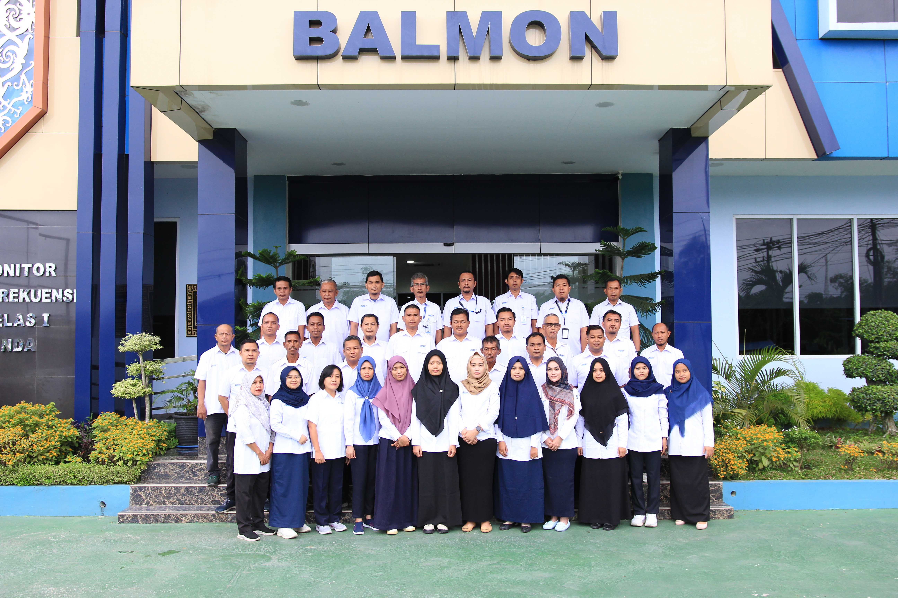
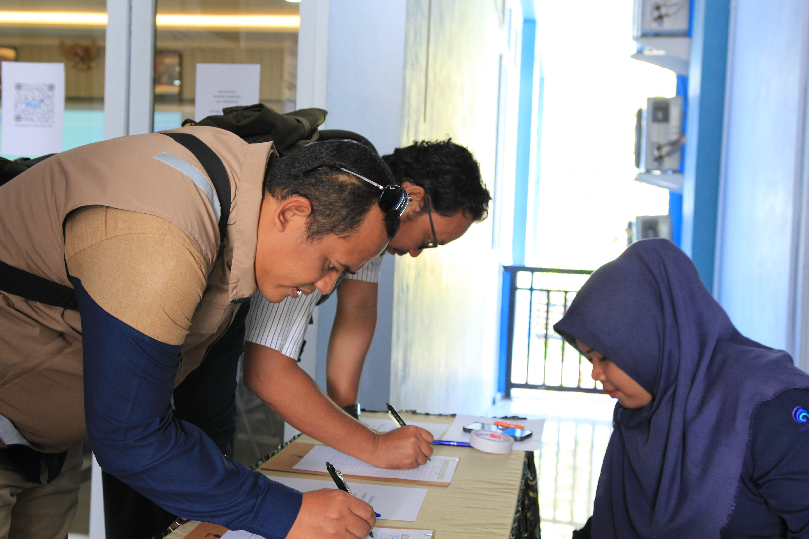

BALMON SAMARINDA
Kementerian Komunikasi & Digital
Mewujudkan frekuensi radio yang tertib, efisien, dan bebas gangguan di Kalimantan Timur. Ajukan perizinan dan pengaduan Anda secara online dengan mudah dan transparan.

Balmon Samarinda memiliki peran strategis dalam melakukan pengawasan, pengendalian, serta penertiban penggunaan spektrum frekuensi radio dan perangkat telekomunikasi di wilayah kerja Kalimantan Timur dan sekitarnya. Spektrum frekuensi radio sebagai sumber daya alam yang terbatas harus dikelola secara tertib, efisien, dan bebas dari gangguan.

Unit Pelaksana Teknis (UPT) Ditjen DJID yang bertugas mengawasi frekuensi radio di Kaltim.

Monitoring frekuensi, penertiban gangguan, dan pelayanan ujian amatir radio (UNAR).

Layanan perizinan spektrum radio maritim, penerbangan, dan penyiaran.

Masyarakat dapat melaporkan gangguan frekuensi radio melalui kanal pengaduan resmi kami.
Menghubungkan ke database Firebase...
Akses dan unduh kebutuhan dokumen perizinan Anda secara lengkap. Kami menyediakan formulir permohonan ISR, Standar Operasional Prosedur (SOP), serta kumpulan regulasi terbaru terkait penggunaan spektrum frekuensi radio.
Unduh Dokumen & Regulasi